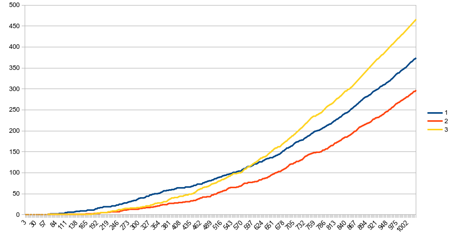

class: center, middle # Bloom filters ### (and not the ones in Photoshop) --- class: middle # First, what is a hash set? To understand Bloom filters, it helps to understand simple hash sets. * Hash sets are often just bit arrays (can be thought of as an array of booleans) * Values are inserted using hash of input A shitty example of a hash function just uses modulus: ```rust input % 10 ``` Inserting the values `13`, `27` and `57` into a hash set using that hash function might look like: <table border="1" style="margin: auto;"> <tr> <th>Hash</th> <td>0</td> <td>1</td> <td>2</td> <td>3</td> <td>4</td> <td>5</td> <td>6</td> <td>7</td> <td>8</td> <td>9</td> </tr> <tr> <th>Value</th> <td>0</td> <td>0</td> <td>0</td> <td style="color: red;">1</td> <td>0</td> <td>0</td> <td>0</td> <td style="color: red;">1</td> <td>0</td> <td>0</td> </tr> <caption></caption> </table> There's a collision above, and most hash set implementations have collision handling built in, usually just using equality and some form of fallback storage. --- class: middle, center # Then, what is a Bloom filter? A Bloom filter is a special type of hash set which sacrifices accuracy for time and space efficiency. Generally, Bloom filters are used when you can't fit a hash set into memory. Bloom filters are of **fixed size** determined by the developer, and **use multiple hash functions** instead of just one. --- # Wait, multiple hash functions? When inserting or reading values in a Bloom filter, multiple hash functions are used independently, and multiple offsets in the storage are accessed. The reason for this is shown later on, for now lets just see how that works. Our shitty contrived hash functions just use modulus (`3`, `5` and `7`.) ```rust hash_a = input % 3 hash_b = input % 5 hash_c = input % 10 ``` For an example input of `12`, the hashes `0`, `2` and `2` are produced, and inserting this into the Bloom filter results in: <table border="1" style="margin: auto;"> <tr> <th>Hash</th> <td>0</td> <td>1</td> <td>2</td> <td>3</td> <td>4</td> <td>5</td> <td>6</td> <td>7</td> <td>8</td> <td>9</td> </tr> <tr> <th>Value</th> <td style="color: red">1</td> <td>0</td> <td style="color: red">1</td> <td>0</td> <td>0</td> <td>0</td> <td>0</td> <td>0</td> <td>0</td> <td>0</td> </tr> <caption></caption> </table> And when reading values from the Bloom filter, all hashes are read and the result is `true` iff all hashes in the Bloom filter are `1`. But what if we try to lookup `42`? --- class: center, middle # Implications of a Bloom filter There are some important things to note about the fixed nature of Bloom filters: * False positives become more common as the Bloom filter fills up * Collisions are never explicitly handled for efficiency reasons **Therefore we can only be certain if a value has never been inserted into a Bloom filter.** Just because all hashes for a value in a Bloom filter are `1`, it is possible that happened due to collisions. --- class: center, middle # Effect of number of hash functions The number of hash functions used changes the rate of false positives over time. The following chart was generated from [some toy code](https://github.com/beefsack/Bloom-filter-example/blob/master/src/main.rs).  --- class: middle # So, why use a Bloom filter? An example is Akamai (one of the oldest and largest CDNs in the world) [use Bloom filters to choose what to cache](https://www.akamai.com/jp/ja/multimedia/documents/technical-publication/algorithmic-nuggets-in-content-delivery-technical-publication.pdf) * A common enemy of cache size efficiency are "one-hit-wonders": values which are cached once but never accessed again * Before caching content, Akamai check whether the content has been accessed once previously using a Bloom filter, and only cache if it is the second time content is accessed * It would be impossible to store the amount of values they require in a set, so a Bloom filter is a viable option, using mere megabytes of memory instead of potentially requiring terabytes * **After using a Bloom filter, Akamai reduced their storage requirements by 75%** I hope someone got a pay rise after that. --- class: middle # Other uses * A number of database engines use Bloom filters to avoid disk lookup for non-existent rows and columns. * Chrome use a Bloom filter for quick local identification of potentially malicious websites. If the local Bloom filter returns `true`, the site is then checked by Google. * Medium uses Bloom filters to avoid recommending articles a user has already read. --- class: middle, center # Summary Bloom filters can be a very cool way to avoid expensive processes or are a very efficient way to use sets where accuracy isn't paramount and space is a concern! ## Resources * [Wikipedia](https://en.wikipedia.org/wiki/Bloom_filter) * [My example Bloom filter in Rust](https://github.com/beefsack/bloom-filter-example/blob/master/src/main.rs) * [Akamai's paper on using Bloom filters](https://www.akamai.com/jp/ja/multimedia/documents/technical-publication/algorithmic-nuggets-in-content-delivery-technical-publication.pdf)